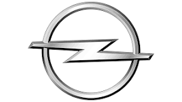
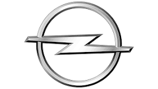

Ferdinand Porsche founded the company called "Dr. Ing. h. c. F. Porsche GmbH"[3] with Adolf Rosenberger[4] and Anton Piëch in 1931.[5] The main offices was at Kronenstraße 24 in the centre of Stuttgart.[6] Initially, the company offered motor vehicle development work and consulting,[3] but did not build any cars under its own name. One of the first assignments the new company received was from the German government to design a car for the people; that is, a Volkswagen.[3] This resulted in the Volkswagen Beetle, one of the most successful car designs of all time.[7] The Porsche 64 was developed in 1939 using many components from the Beetle.[3] Porsche's tank prototype, the "Porsche Tiger", that lost to Henschel & Son's Tiger I. Panzerjäger Elefant – after the loss of the contract to the Tiger I, Porsche recycled his design into a tank destroyer. During World War II,[8] Volkswagen production turned to the military version of the Volkswagen Beetle, the Kübelwagen,[8] 52,000 produced, and Schwimmwagen,[8] 15,584 produced.[9] Porsche produced several designs for heavy tanks during the war, losing out to Henschel & Son in both contracts that ultimately led to the Tiger I and the Tiger II. However, not all this work was wasted, as the chassis Porsche designed for the Tiger I was used as the base for the Elefant tank destroyer. Porsche also developed the Maus super-heavy tank in the closing stages of the war, producing two prototypes.[10] Ferdinand Porsche's biographer, Fabian Müller, wrote that Porsche had thousands of people forcibly brought to work at their factories during the war. The workers wore the letter "P" on their clothing at all times. It stood not for "Porsche", but for "Poland".[11] At the end of World War II in 1945, the Volkswagen factory at KdF-Stadt fell to the British. Ferdinand lost his position as chairman of the board of management of Volkswagen, and Ivan Hirst, a British Army major, was put in charge of the factory. (In Wolfsburg, the Volkswagen company magazine dubbed him "The British Major who saved Volkswagen".)[12] On 15 December of that year, Ferdinand was arrested for war crimes, but not tried. During his 20-month imprisonment, Ferdinand Porsche's son, Ferry Porsche, decided to build his own car, because he could not find an existing one that he wanted to buy. He also had to steer the company through some of its most difficult days until his father's release in August 1947.[13]


 
